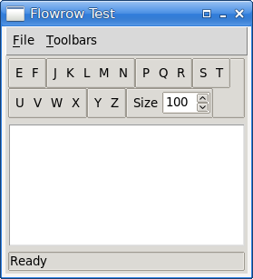

The Flowrow module flowrow-1.tm is a self-contained pure
Tcl/Tk 9 module that provides a class for creating a frame for
holding one or more toolbars. A toolbar being a ttk::frame
holding one or more widgets. The most common widgets used are
ttk::buttons, but entries, labels, and spinboxes work fine
too.
It has no dependencies. The usefulnes of a flowrow is that when the window containing it is resized the flowrow will relayout the toolbars it contains so that they fit within the window’s width. It does this by laying them out in as many rows as necessary.
The flowrow module (and namespace of the same name) provides
one public function; the flowrow::Row
new constructor. The returned flowrow::Row object provides
methods for adding, hiding, showing, and removing toolbars. The
flowrow::Row object’s ttk::frame must
be laid out in its parent using the grid command.
The flowrow::Row will automatically relayout the toolbars it
contains when toolbars are added, hidden, shown, or removed. It can also
provide a Toolbars menu. The menu’s first
item allows the end-user to show or hide all the toolbars; the other
items control each toolbar individually.
flowrow::Row new name
The name is the name of the window (a
ttk::frame) to create. For example, if the application’s
main window is .mainwindow, the name
might be .mainwindow.toolbar.
For the flowrow::Row methods shown below we will assume that
the flowrow::Row object is held in a variable called
$Flowrow.
$Flowrow frame
This method returns the flowrow::Row’s
ttk::frame. It is needed to provide the frame which
must then be gridded inside the main window.
$Flowrow toolbars
This method returns a dict, the keys of which are the
toolbars (ttk::frame’s) managed by the
flowrow::Row, and whose values are 0 (false;
hide) or 1 (true; show; the default).
This method is ideal for saving the state of an application’s toolbars.
$Flowrow refresh
This method forces the flowrow::Row to relayout its
toolbars. It should not be needed by external code.
$Flowrow add_toolbar toolbar
This method adds the given toolbar (normally a
ttk::frame) to those managed by the
flowrow::Row and then calls flowrow::Row refresh. Note that
flowrow::Row will layout the toolbar’s
child widgets so this method should be called after the
toolbar and its child widgets have been
created. (See flowrow_test.tk’s make_toolbar
method for an example.)
$Flowrow show_toolbar toolbar {show 1}
This method is used to programmatically hide or show the given
toolbar. It is rarely needed since the end-user can
hide and show toolbars using the Toolbars
menu.
$Flowrow hide_toolbars argsThis method is used to programmatically hide all the given toolbars. If the application’s toolbars state has been saved, it can be restored by calling this method. For example:
# Assume that toolbars is a dict with toolbar keys and 0 (hide) or 1 (show)
# values (i.e., as returned by the flowrow::Row toolbars method.
set hidden [list]
dict for {toolbar show} $toolbars {
if {!$show} { lappend hidden $toolbar }
}
$Flowrow hide_toolbars {*}$hidden
$Flowrow remove_toolbar toolbar
This method stops the given toolbar from being
managed by the flowrow::Row. Normally, toolbars are hidden
using the flowrow::Row
show_toolbar method with a second argument of 0
(false; don’t show).
$Flowrow show {show 1}This method is used to programmatically hide or show all the toolbars. It is rarely needed since the end-user can hide and show all the toolbars (or individual toolbars) using the Toolbars menu.
$Flowrow new_menu parent_menu
names
This method should be called only after all the toolbars have
been added using the flowrow::Row
add_toolbar method.
This method adds a new Toolbars menu as a cascade (submenu) of
the given parent_menu. The names
must be a list of names corresponding to the toolbars that
were added (in the same order that they were added). For example:
menu .menu
. configure -menu .menu
menu .menu.file
.menu add cascade -menu .menu.file -label File -underline 0
# Other File menu options…
.menu.file add command -command [callback on_quit] -label Quit -underline 0 -accelerator Ctrl+Q
# Any other menus that precede the Toolbars menu…
$Flowrow new_menu .menu {File Edit Style Item Window} ;# creates a .menu._flowrow menu
# Any other menus that follow the Toolbars menu…